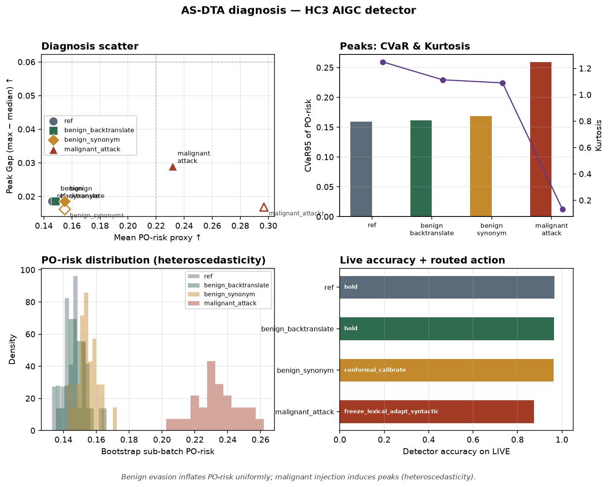

HC3 AIGC detector · PO-risk proxy mean × Peaks · targeted adaptation

| batch | mean PO | peak gap | CVaR95 | kurtosis | acc | auc | routed action |
|---|---|---|---|---|---|---|---|
| ref | 0.1457 | 0.0186 | 0.1592 | 1.248 | 0.966 | 0.994 | hold |
| benign_backtranslate | 0.1483 | 0.0186 | 0.1615 | 1.113 | 0.965 | 0.994 | hold |
| benign_synonym | 0.1549 | 0.0185 | 0.1682 | 1.089 | 0.963 | 0.994 | conformal_calibrate |
| malignant_attack | 0.2317 | 0.0290 | 0.2587 | 0.132 | 0.874 | 0.941 | freeze_lexical_adapt_syntactic |
| batch | mean | peak_gap | acc |
|---|---|---|---|
| malignant_attack | 0.2968 | 0.0168 | 0.920 |
| benign_synonym | 0.1549 | 0.0162 | 0.965 |
{
"ok": true,
"threshold": 0.4383674348886492,
"target_fpr": 0.05,
"realized_fpr": 0.05384615384615385,
"recall": 0.9730769230769231
}As observed, benign evasion inflates the PO-risk uniformly, while malignant adversarial injection induces extreme heteroscedasticity (peaks) in the PO-risk distribution.